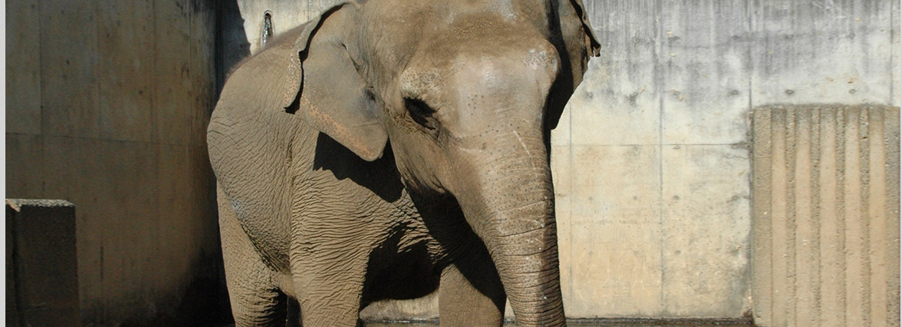
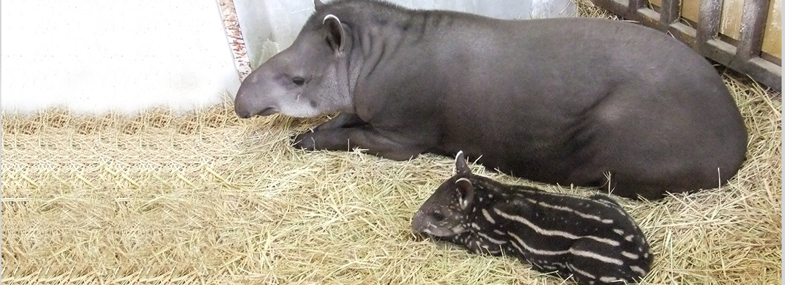
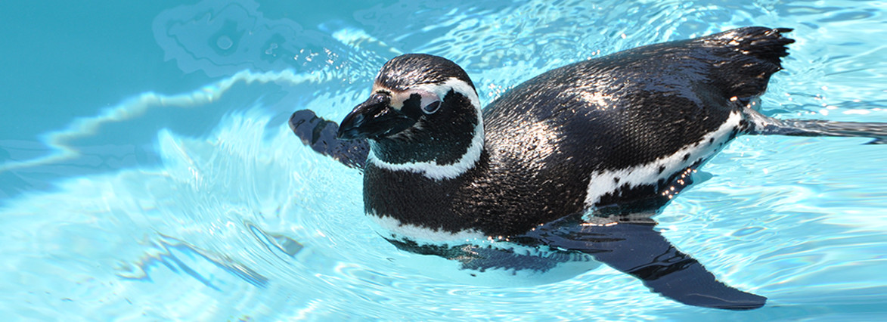
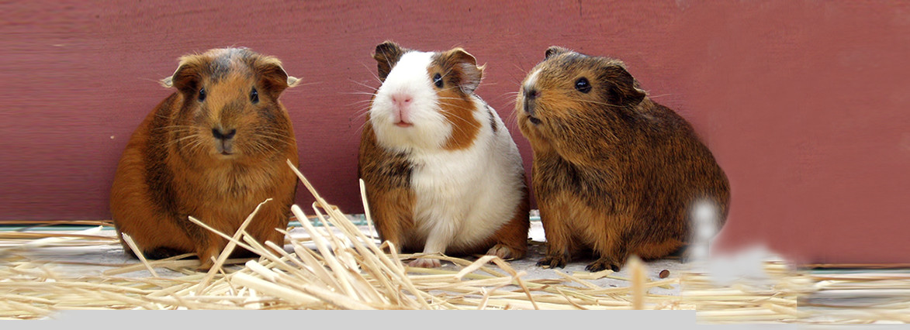
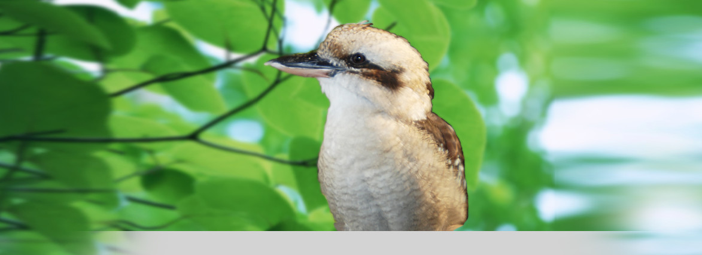

動物園リニューアル工事の進捗
遊亀公園および附属動物園の整備工事を進めています。工事の進捗状況を随時お知らせします。
進捗を見る ↗Since 1919 ・ 大正8年開設
甲府市のほぼ中心にある、だれもが気軽に楽しめる都市型動物園。動物たちの“今”を、もっと近くで。





Visit
4～10月 9:00–17:00／11～3月 9:30–16:30（入園は閉園30分前まで）。詳細
大人320円／子ども（小・中学生）30円。団体・減額免除あり。料金表
JR甲府駅南口よりバス「遊亀公園前」下車／甲府南ICより約10分。行き方
休園日：毎週月曜日（祝日の場合は翌火曜日）・年末年始。現在は整備工事のため休園中です。